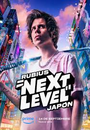
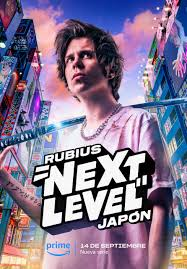
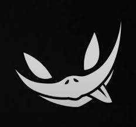
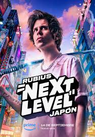

En marzo de 2018 reunió a 100 youtubers de habla hispana para realizar un torneo del videojuego Fortnite, llego a tener a más de un millón de espectadores y se convirtió en la retransmisión de un videojuego mas vista de la historia. Pero despues de esto el influencer sufrio un ataque de ansiedad y se retiro de las redes durante un largo tiempo. Pero en su regreso volvio mas fuerte, y una saga de comics que fueron, el primero en 2015 donde el mismo se sumerge en el mundo de la realidad virtual con compañeros para vivir aventuras, El Rubius: Virtual Hero. Y como fue un exito publico la segunda parte de Virtual Hero II: La torre imposible en 2016, y en 2017 saco la tercera parte llamada Virtual Hero III: La máscara del troll. Y en este mismo año anuncio que iba a sacar una serie animada sobre este libro.
En 2019 hizo un gran cambio, el inlfuences hispano cambio de plataforma y fue de Youtube a Twitch, Además retomó la actividad de su viejo canal original elrubius, el cual renombraría a Rubius Z, para resubir su contenido en Twitch ahí.
El streamer saco su propia marca de ropa llamada madkat, con la que hizo muchas colaboraciones con series famosas, videojuegos o con otros influencers reconocidos, como por ejemplo una colaboracion con la serie de batman, otra colaboracion con la streamer Mexicana Rivers para promocionarla en una lucha de boxeo presentada por Ibai, y su colaboracion mas reciente, el juego muy conocido Fortnite, con el cual anuncio tambien su skin dentro del mismo juego
MadKat Madkat x Rivers
Para celebrar su décimo aniversario de su primer vídeo en YouTube, Amazon Prime Video anunció mediante la Jove Orquestra Simfònica de Barcelona tocando el tema 'Minero' el estreno de Rubius X, un documental sobre como ha llegado en donde esta ahora como streamer y sobre su familia. En 2023 saco otra serie llamada Rubius: Next level Japan que trataba de que bucaba a su gato wilson que fue secuestrado y para recuperarlo iba pasando diferentes pruebas de cosas tipicas que se hacian en Japon, esta serie tenia 4 capitulos
